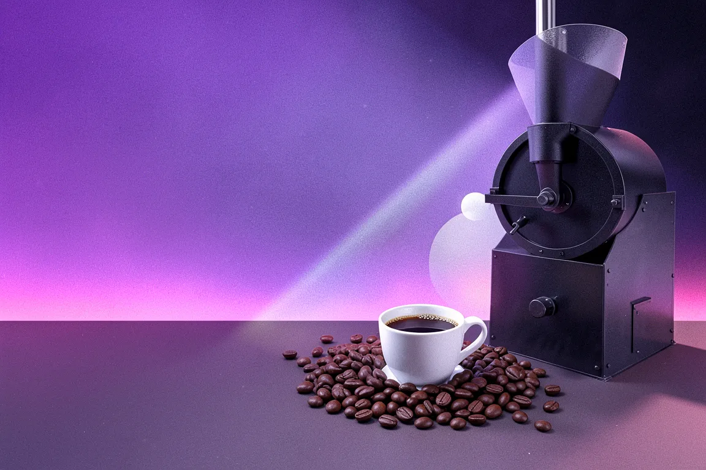

Gjennomsiktige paneler som gjør de fargerike formene bak seg uskarpe, med en tynn lys kant. Det spredte seg etter macOS Big Sur i 2020 og tar opp glasset fra Frutiger Aero med ekte uskarphet av bakgrunnen.

Kjerneidé
Lag er lesbare når hvert av dem er en rute av frostet glass: det viser det som ligger under, og beholder likevel sitt eget plan.
Designprinsipper
Plasser panelene over en livlig bakgrunn av gradienter eller uskarpe former, for uskarphet trenger farge bak seg for å synes.
Fyll hvert panel med rgba(255, 255, 255, 0.15) til 0.25 og bruk backdrop-filter: blur(16px til 24px) saturate(160%).
Legg til en kant på 1px i rgba(255, 255, 255, 0.3) på hvert panel for å markere glasskanten.
Bruk radier på 16px til 24px på paneler og 12px på knapper.
Vis dybde ved stabling: det fjerneste laget har en uskarphet på 24px og det nærmeste en på 8px.
Behold én myk skygge på 0 8px 32px rgba(31, 38, 135, 0.2) under hvert panel for å løfte det fra bakgrunnen.
Sett tekst på et panel bare når området under har minst 4,5:1 kontrast, eller legg til et slør av rgba(0, 0, 0, 0.25).
Antimønstre
Uskarphet på en ren hvit eller ren grå bakgrunn der ingenting skinner gjennom
Brødtekst på et panel med mindre enn 4,5:1 kontrast mot det uskarpe laget bak
Ugjennomsiktige paneler med en falsk frosttekstur og uten backdrop-filter
Stabler med mer enn tre overlappende glasslag
Panelkanter tykkere enn 1px eller mørkere enn fyllet
Harde svarte slagskygger under et glasspanel
Uskarphetsradier over 40px på store områder, som koster bildefrekvens
Fargepalett
Auroralilla #6C5CE7 start på bakgrunnsgradient
Aurorarosa #FD79A8 slutt på bakgrunnsgradient
Glasshvit #FFFFFF panelfyll ved 15 % til 25 % alfa og kant